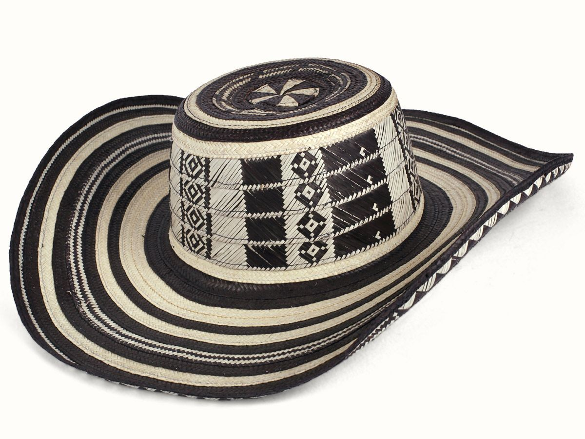
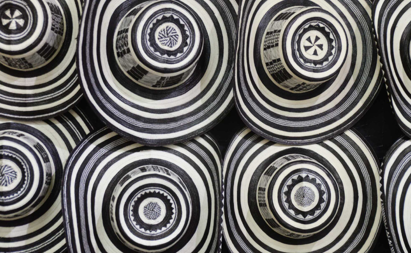
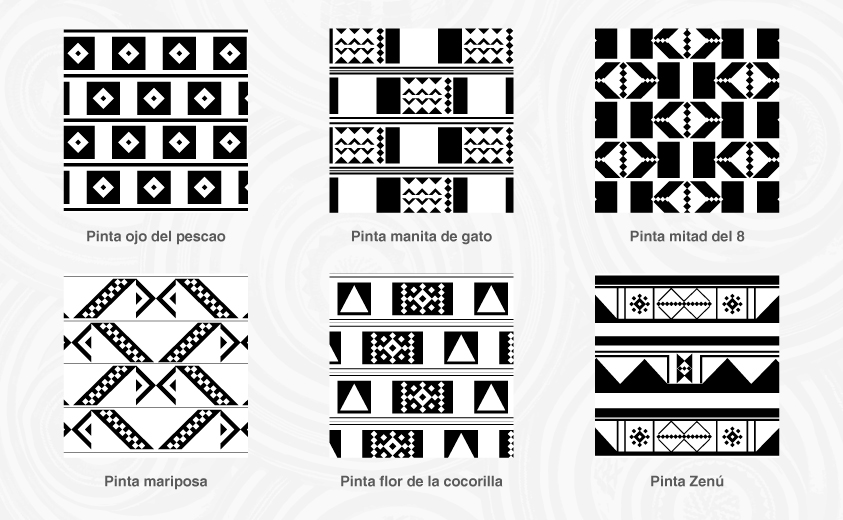

El Sombrero vueltiao, icono de nuestra cultura nacional, proviene de las sabanas de Córdoba y Sucre. En el municipio de San Andrés se produce el Sombrero vueltiao fino, específicamente en los corregimientos de Tuchin y Los Vidales, dado que en estos lugares habitan ancestros indígenas. Estos aún cosen el sombrero con fibra de maguey, volviéndolo un artículo artesanal de extrema calidad.
Origen
El sombrero vueltiao tiene sus orígenes en la cultura Zenú y es elaborado de una fibra natural proveniente de una palmera, conocida como caña flecha que crece en las riberas de los ríos y ciénagas de la costa atlántica colombiana. Este material natural, propio de Colombia, se transforma en fibras blancas y negras que, más adelante, se trenzan gracias a una técnica tradicional implementada por la cultura Zenú hace más de mil años. El trenzado de caña flecha representa elementos de la cosmogonía de esta cultura indígena.

Diseños
Los diseños que tejen los artesanos se denominan “pintas” y cada una de ellas, hace alusión a la concepción del origen del mundo, a elementos de la fauna y flora de la región y a la diferenciación de los clanes y familias Zenú. Las pintas son el resultado de la inspiración, la experiencia y el amor por lo que esta comunidad es en sí misma.
Dentro de las pintas tradicionales se han reconocido más de setenta patrones distintos entre los que se destacan: la cocá o gallina guinea, la flor de la cocorilla, el pechito del grillo, la mariposa, el granito de arroz, el ojo de pescado, la flor de limón, flechas, la mano de gato, las patas de armadillo, el piloncito o el pilón, el peine grande y el chiquito el gusano, la araña, dientes de ñeque, flor de totumo
